院内書類 使い方ガイド ← ガイド一覧へ 受付・スタッフ・獣医師向け ｜ 2026年11月27日版 ｜ 荻窪ツイン動物病院
問診票・同意書・麻酔前注意事項などの書類を、患者ごとに作る・署名する・印刷するアプリです。画面は「今日」「患者」「書類」の3つのタブだけ。今日＝今日渡す書類と確かめる書類、患者＝その患者の書類が新しい順に1本の一覧、書類＝全部の書類を種類・状態・期間で探す。書類は「＋書類を作る」で患者→種類の順に選んで作ります。カルテ番号を入れるとアーミックスから患者情報を自動取込、同意書はiPadで署名、入院同意書は署名すると入院管理アプリへ自動連携します。使いにくいところはどの画面からでも「💬 ここが不便」で送れます。
- アドレスとパスコードは今までと同じです。
- 手術・麻酔の予定・導入薬の準備・麻酔の記録・麻酔の薬の設定は麻酔カルテで行います（麻酔カルテ 使い方ガイド）。今までの手術・麻酔の記録は麻酔カルテへ移してあります。
- 歯科の記録は歯科カルテで書きます（歯科カルテ 使い方ガイド）。
- 同意書・麻酔前注意事項・問診票などは、これまでどおりこのアプリで作ります。前の「問診票」「同意書」「その他書類」「受付対応待ち書類」の画面も、書類タブのいちばん下から今までどおり開けます。
1. アプリを開く
| 場所 | URL |
|---|---|
| 院内のPC・iPad | https://giiv6wcx.lamarck-lan.com:13007 |
| 院外（Tailscale を ON） | https://serverpc.tail2de5bb.ts.net:8450（院の Tailscale 設定が必要） |
スタッフ用パスコードが要ります（2026-10-19 から）。開くと「スタッフ用パスコードを入力してください」の画面が出るので、入院管理アプリと同じパスコードを入れて「ログイン」。一度入れると、その端末（ブラウザ）は30日間覚えます。パスコードが分からなければ院長・永野さんへ。飼い主さまがホームページから使う問診フォームは、今までどおりパスコードなしで開けます。
2. 全体の流れ
2-1. 画面の全体像（タブ）
| タブ・ボタン | できること |
|---|---|
| 今日 | 開いたときの画面。①渡す（受付で説明・署名・お渡しする書類）②確かめる（届いた問診票・署名前の書類）③今日の来院（本日の歯科初診）が1画面に並びます（3章）。 |
| 患者 | 患者を探して開くと、その患者の書類が種類を問わず新しい順に並びます（5章）。 |
| 書類 | すべての書類を種類・状態・期間・患者で絞って探します（6章）。 |
| ＋書類を作る | 今日・患者ページ・書類の右上のボタン。患者→書類の種類の順に選んで作ります（4章）。 |
| ⚙ 設定 | 右上の歯車。文書テンプレート・スタッフ・更新履歴（10章）。 |
| 麻酔カルテ↗ 歯科カルテ↗ | 右上の小さなリンク。手術・麻酔の記録と歯科の記録は別のアプリで開きます（11章）。 |
| 💬 ここが不便 | 使いにくい点をその場で送れます（12章）。 |
スマホでは、3つのタブが画面の下に固定で出ます（今日・患者・書類）。設定とここが不便は上の右側です。iPad・PC では上の帯に並びます。
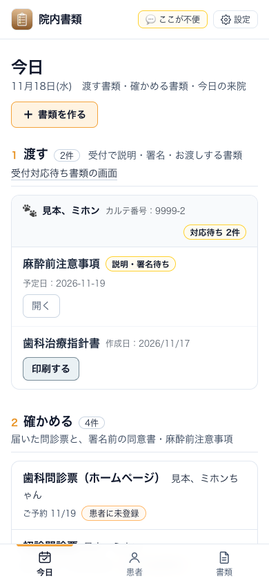
2-2. 書類の1日の流れ
3. 「今日」タブ受付看護師
開くと最初に出る画面です。今日の受付・看護師さんの仕事が上から順に並びます。
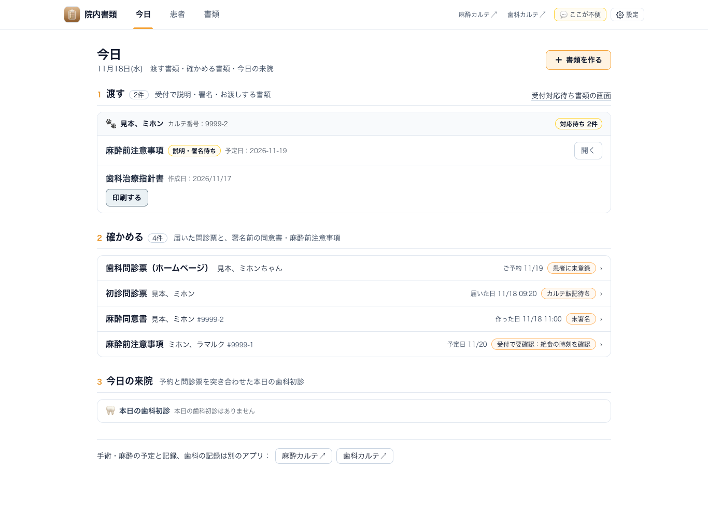
3-1. ① 渡す（受付対応待ち）
受付で説明・署名・お渡しする書類が患者ごとにまとまって出ます（麻酔前注意事項・歯科治療指針書）。
| ボタン | すること |
|---|---|
| 開く | 麻酔前注意事項を開きます。下の「受付の操作」で［飼主様の確認・署名に進む］→ 署名 →［印刷する］（8-2）。 |
| 印刷する | 歯科治療指針書などをそのまま印刷します。 |
印刷すると「お渡し済み」になり、①渡すから消えます（別に「渡した」を押す必要はありません）。右上の「受付対応待ち書類の画面」で前からの一覧（問診票の対応待ちも入った画面）も開けます。
3-2. ② 確かめる
院内書類の中で手が止まっている書類だけが出ます。行を押すとその書類が開きます。
| 札 | 意味・すること |
|---|---|
| 患者に未登録 | ホームページの問診票で、まだ患者にひも付いていない物。開いて患者にひも付けるか患者登録します（7-2）。 |
| カルテ転記待ち／読み取りの確認待ち | 届いてから7日以内で、まだカルテに転記していない問診票。開いて「カルテ貼付用テキスト」をコピーしてアーミクスに貼ると消えます（7-4）。紙を読み取った物は読み取り結果の確認が先です（7-3）。 |
| 未署名（同意書・麻酔前注意事項） | まだ署名していない書類。予定日が今日以降の物（予定日の無い物は今日作った物）が出ます。古い未署名は書類タブの「下書き・未署名」で見られます。 |
| 受付で要確認：○○ | 麻酔前注意事項に確認が要る点がある物。札に理由が出ます（例：絶食の時刻を確認）。 |
3-3. ③ 今日の来院（本日の歯科初診）
その日の歯科の初診を、予約システムの予約と問診票を突き合わせて並べます。問診票がまだ届いていない方も出ます（「問診票 未提出」）。ご予約時のメモ（ご相談内容）もここで読めます。
いちばん下の麻酔カルテ↗／歯科カルテ↗で、手術・麻酔の予定と記録・歯科の記録のアプリを開けます。
3-4. 受付PCのお知らせ（麻酔前注意事項が届いたとき）受付
受付PCでは、院内書類を開いていなくても（アーミクスを使っている最中でも）、受付対応待ちに麻酔前注意事項が届くと30秒以内に画面の真ん中に窓が出て、音が鳴ります。受付PCだけの仕組みで、ほかのPC・iPadには出ません。

4. 書類を作る（＋書類を作る）受付看護師獣医師
「今日」「書類」の右上、患者ページの上にある［＋書類を作る］から作ります。患者ページから押したときは、患者が決まった状態で②から始まります。
4-1. ① 患者を選ぶ
カルテ番号・名前で探して選びます。院内書類に無い患者は、カルテ番号からアーミックス取り込み（受付PCが動いている日中のみ）か、「仮患者として新規作成」。まだ患者登録のない初診の方は、下の［初診問診票（新しい方）］［歯科問診票（新しい方）］から、院内iPadで飼い主さまに記入してもらう問診票を作ります（7-1）。
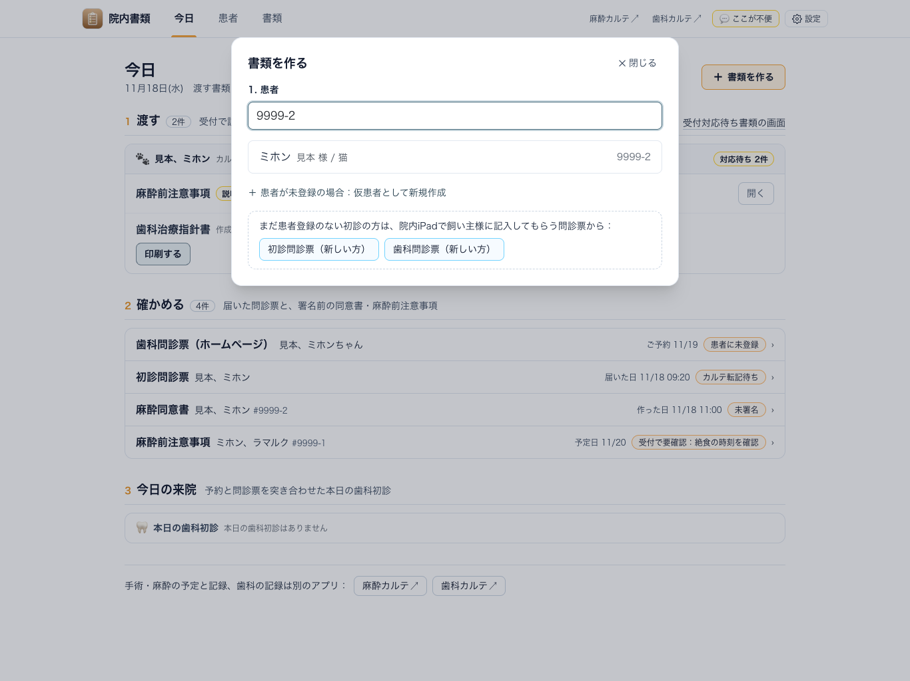
4-2. ② 書類の種類を選ぶ
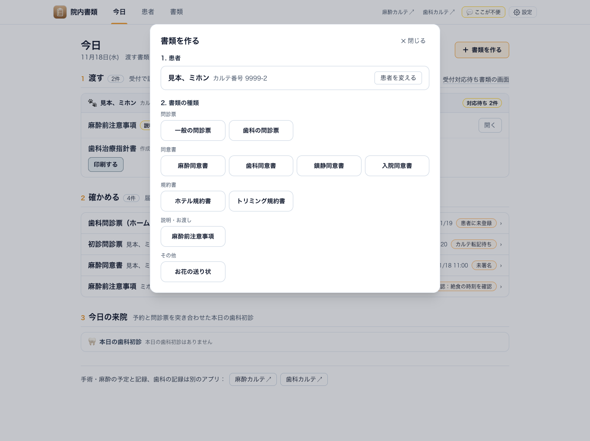
| 分け | 種類 |
|---|---|
| 問診票 | 一般の問診票・歯科の問診票（7章） |
| 同意書 | 麻酔同意書・歯科同意書・鎮静同意書・入院同意書（8章） |
| 規約書 | ホテル規約書・トリミング規約書（8章） |
| 説明・お渡し | 麻酔前注意事項（8-2） |
| その他 | お花の送り状（9章） |
選ぶと、今までと同じ作る画面が開きます。
5. 「患者」タブ
5-1. 患者を探す・登録する
カルテ番号・飼い主名・ペット名・電話番号で探せます。一覧はカルテ番号・飼い主名・ペット名の順に太字で並びます。行を押すと患者ページが開きます。
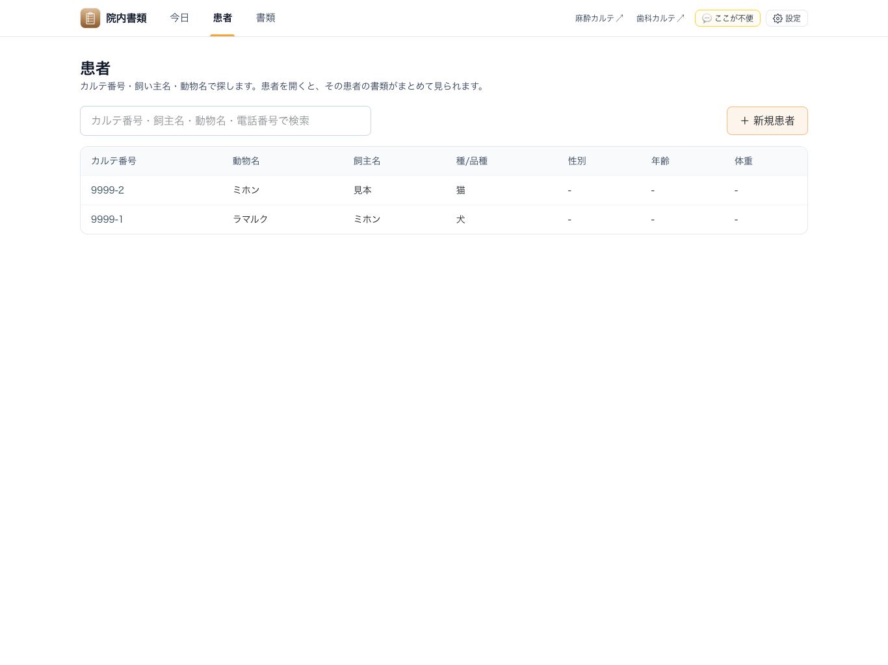
- ＋新規患者：カルテ番号を入れて「アーミックスから取り込む」と、種類・品種・性別・年齢・体重を自動で埋められます（受付PCが動いている日中のみ）。
- アーミックスに無い子・仮の子は仮患者として登録し、あとで正式なカルテ番号にひも付けできます。
5-2. 患者ページ
いちばん上にカルテ番号・飼い主名・ペット名が大きく太字で出ます。その下に、その患者の書類が種類を問わず新しい順に1本の一覧で出ます（問診票・院内iPad／Web問診・同意書・麻酔前注意事項・歯科治療指針書）。行を押すとその書類が開きます。患者の情報は右の小さな枠（スマホでは下）にあります。
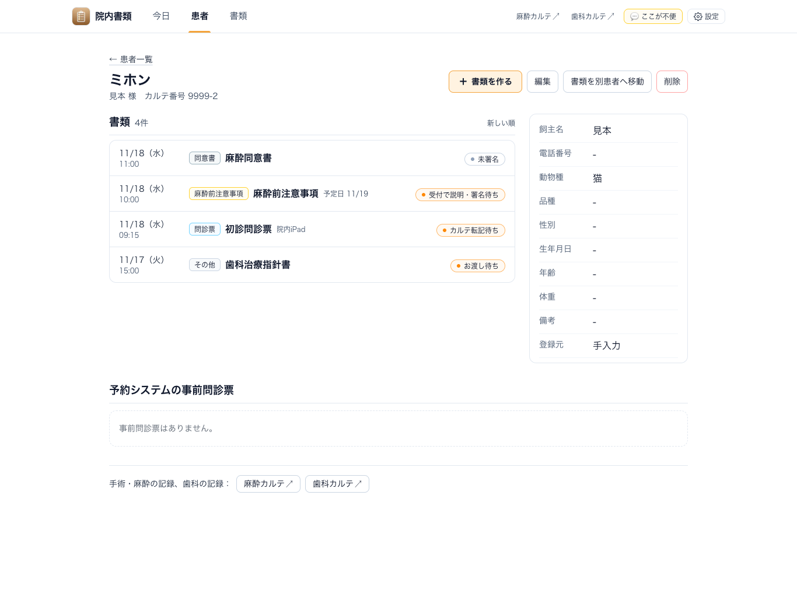
| 上のボタン | すること |
|---|---|
| ＋書類を作る | この患者の書類を作ります（種類を選ぶだけ）。 |
| 編集 | 患者の情報を直します。 |
| 書類を別患者へ移動 | 5-4。 |
| 削除 | 患者を消します（間違えて作った患者だけ）。 |
5-3. 予約システムの事前問診票
患者ページの下に、飼主さまが予約システムから来院前に提出した問診票が出ます。「アーミクス用にコピー」でカルテに貼れる形でコピーでき、多頭のご家庭では動物1頭ずつコピーできます。
5-4. 間違えて作った書類を移す
仮患者や別の患者で作ってしまった問診票・同意書・歯科治療指針書は、患者ページの「書類を別患者へ移動」から正しい患者へ移せます（移動の記録も残ります）。
6. 「書類」タブ
すべての書類を新しい順に1本の一覧で見ます。上の欄で患者で探す（カルテ番号・名前）、下のボタンで絞り込みます。絞り込みはアドレスにも残るので、書類を開いて戻っても同じ絞り込みのままです。
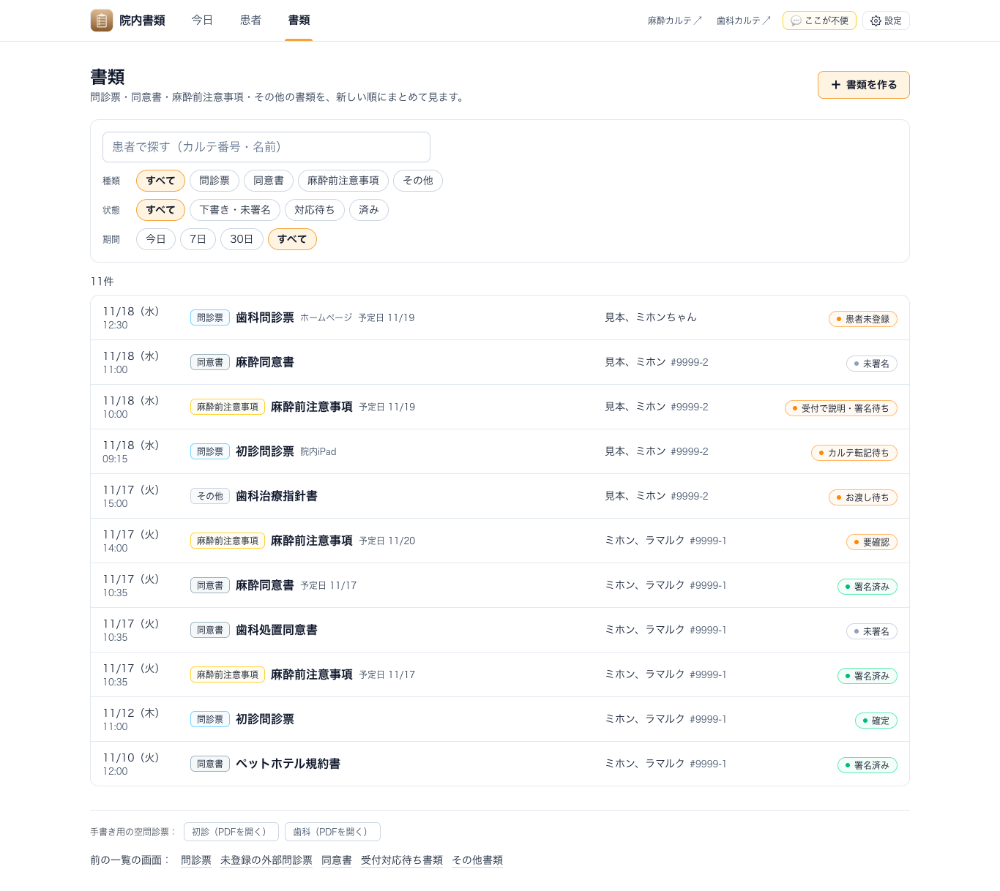
| 絞り込み | ボタン |
|---|---|
| 種類 | すべて／問診票／同意書／麻酔前注意事項／その他（歯科治療指針書） |
| 状態 | すべて／下書き・未署名／対応待ち／済み |
| 期間（作った日） | すべて／今日／7日／30日 |
行の右の札が今の状態です：未署名 まだ署名していない ／ 患者未登録 カルテ転記待ち 受付で説明・署名待ち お渡し待ち 要確認 手が止まっている（対応待ち） ／ 署名済み 確定 済み。お花の送り状は作って印刷・FAXするだけなので一覧には残りません。一覧は200件まで出ます（多いときは絞り込んでください）。
いちばん下に、手書き用の空の問診票（初診・歯科のPDF）と、前の一覧の画面（問診票・未登録の外部問診票・同意書・受付対応待ち書類・その他書類）への入口があります。
7. 問診票
7-1. 院内のiPadで記入してもらう受付
- 患者登録のある方：＋書類を作る → 患者 →［一般の問診票］または［歯科の問診票］。
- まだ患者登録のない初診の方：＋書類を作る →［初診問診票（新しい方）］／［歯科問診票（新しい方）］→ 入力方法を選びます。ふつうは「通常入力」（iPadを飼い主さまにお渡しして入力→「問診票を提出する」）。入力は自動で保存されます。デジタル入力が難しい方だけ「手書きモード」か「紙問診票から読み取り」（7-3）。
- 提出された問診票は「今日」の②確かめるに「カルテ転記待ち」で出ます。
7-2. ホームページから届いた問診票（Web問診）
- ホームページの問診フォームから届いた問診票で、まだ患者にひも付いていない物は「今日」の②確かめるに「患者に未登録」で出ます（書類タブ下の「未登録の外部問診票」にもまとまっています）。
- 開いて内容を確認し、「この患者に紐付け」（院内書類にいる患者）か「患者登録する」（新しい方）。
- あとから患者にひも付けられます：問診票・トリミング規約書の詳細画面の「＋ 患者を紐付ける（アーミクス連携）」から、作成済みの書類も後でひも付け・変更ができます。
- 飼主さんは提出後も直せます：送信完了画面の「入力内容を確認・修正する」から修正・再提出でき、最新の内容がスタッフ側に反映されます。
7-3. 紙の問診票を読み取る
- 手書きの紙が要るときは、書類タブのいちばん下の空の問診票PDF（初診・歯科）を開いて印刷します。
- 記入済みの紙は、＋書類を作る →［初診問診票（新しい方）］など →「紙問診票から読み取り」→「写真を撮る / 画像を選ぶ」で撮影・添付（最大8枚）。
- AIが読み取ると確認画面が出ます。元の画像を見ながら、「読み取りで自信のない箇所」を中心に直して保存します。読み取れなかったときは手で入力します。
7-4. カルテに貼る
問診票の詳細画面の「カルテ貼付用テキスト」のコピーボタンで、アーミクスのカルテにそのまま貼れる形でコピーできます。多頭のときは1頭ずつコピーして1頭ずつ貼ります。全頭ぶんコピーし終わると対応済みになり、「今日」の②確かめるから消えます。
8. 同意書・規約書・麻酔前注意事項（iPad署名）受付獣医師
8-1. 同意書・規約書を作って署名してもらう
＋書類を作る → 患者 → 種類（麻酔・歯科・鎮静・入院の同意書、ホテル・トリミングの規約書）で作り、iPadでその場で署名してもらいます。作った書類は患者ページ・書類タブから開けます。
- 麻酔・歯科の同意書と麻酔前注意事項の状態（未取得・下書き・署名済み）は、麻酔カルテの本日の麻酔のカードに札で出ます。
- 入院同意書は、署名が確定すると入院管理アプリへ自動で連携されます（入院管理側で「カルテを作成」を押すだけ）。多頭のグループ同意書でまとめて署名した場合も送られます（2026-10-13 から）。
- 多頭飼育のグループ同意書：複数の患者をまとめて選び、一覧表形式の1枚・署名は飼主1名分で作れます。署名後の画面から「グループ全員分を印刷」ができます（1頭ずつの印刷も残してあります）。作る画面で患者を選んだあと、「同じ飼主様の他の患者を追加する（多頭飼育）」で一緒に署名する子を足します（トリミング規約書は1頭ずつ）。
- 病院を使わないトリミング規約書など、患者を選ばずに作るときも、前の「同意書」の画面の［＋ 新規同意書］から作れます。
8-2. 麻酔前注意事項（受付での説明・署名・お渡し）
- 獣医師・看護師が作ります（カルテ音声から下書きが届くこともあります）。入力は自動で残ります：下書き保存を押さずにページを離れても、戻ると入力内容が復元されます。来院日・処置日・来院時間が未記入でも署名できます。
- 受付に回ると「今日」の①渡すに「説明・署名待ち」で出ます（受付PCにはお知らせの窓も出ます・3-4）。
- ［開く］→ 画面の下の「受付の操作」で［飼主様の確認・署名に進む］。誤りがあれば、その画面で直して保存できます。
- 署名が済んだら［印刷する］でお渡しします。印刷すると「お渡し済み」になり、①渡すから消えます。
8-3. 署名済みの書類を LINE のマイページへ送る（印刷の代わり）
これまで印刷してお渡ししていた署名済みの書類（同意書・規約書・麻酔前注意事項）を、飼い主さまの LINE のマイページへ PDF で送れます。
- 署名済みの書類を開き、上の［📱 マイページへ送る］を押します。
- 「飼い主さまの LINE のマイページへ、この書類の PDF を送ります。」と出たら［送る］（やめるときは［やめる］）。
- 「📱 マイページへ送りました（日時）」の札が出ます。飼い主さまのマイページの「お渡し」に入り、LINE でお知らせが届きます（夜9時〜朝9時に送った分は朝9時）。
- 同じ書類は1回だけ送れます（2回押しても二重に届きません）。
- 「LINE のお知らせは届いていないかもしれません」と出たら［LINE のお知らせを送り直す］。書類はマイページに届いています。
- 「送れたか分かりません」と出たときは、もう送れないようにしてあります。院長に伝えてください。
- 多頭のグループ同意書は1頭ずつの書類の画面から送ります。カルテの無い子（病院を使わないトリミング規約書）は送れません。
9. お花の送り状と FAX受付
＋書類を作る → 患者 →［お花の送り状］で開くと、カルテ番号から飼主名・住所・電話を自動で照会して入ります（前の「その他書類」の画面からも作れます）。印刷のほか、印刷せずに画面から中央フラワーさんへ FAX できます（2026年11月5日から）。院内の複合機から直接送るので、受付PCで番号を打つ必要はありません。
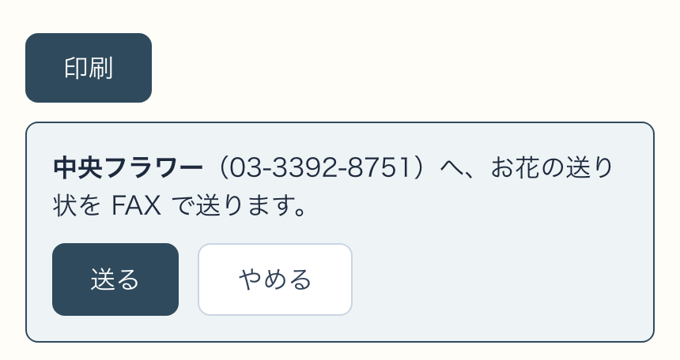
10. 設定獣医師
右上の⚙ 設定に、文書テンプレート管理・スタッフ管理・更新履歴の3つがあります（麻酔の薬の設定は麻酔カルテの「薬の設定」「緊急薬の設定」へ移りました）。
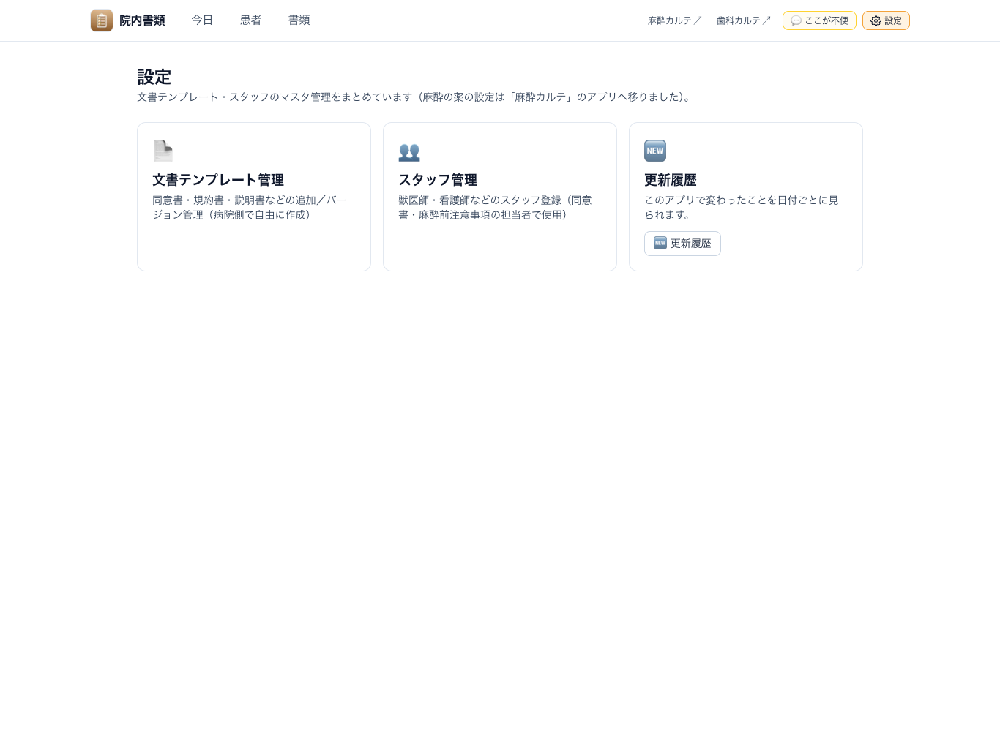
10-1. 文書テンプレート管理
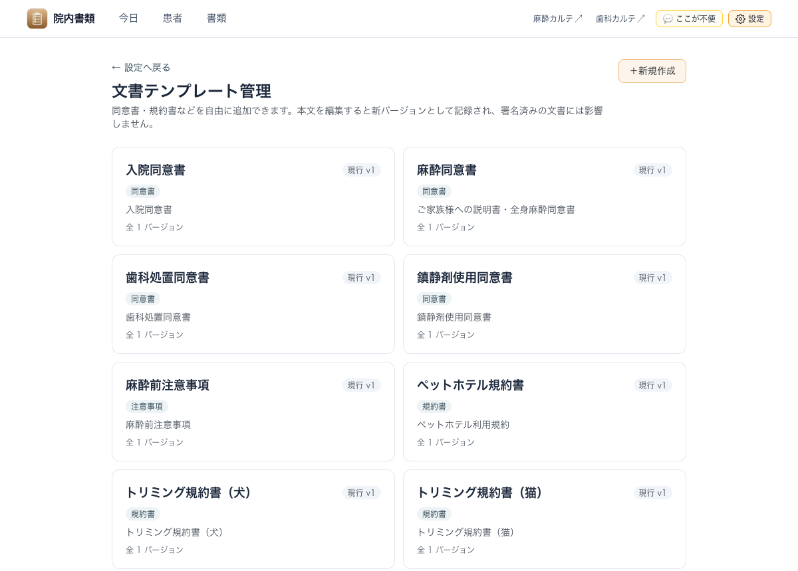
同意書・規約書の本文は病院側で自由に編集できます。編集すると新しいバージョンとして記録され、すでに署名済みの文書には影響しません。
10-2. スタッフ管理
獣医師・看護師などのスタッフを登録します。同意書・麻酔前注意事項の担当者の欄で使います。
10-3. 更新履歴
アプリが何日に何が変わったかを、日付ごとに読めます（2026-11-18 からホームではなく設定の中です）。
11. 手術・麻酔と歯科の記録（別のアプリ）
2026年11月18日から、手術・麻酔の予定・導入薬の準備・麻酔の記録・麻酔の薬の設定は「麻酔カルテ」（麻酔カルテ 使い方ガイド）、歯科の記録は「歯科カルテ」（歯科カルテ 使い方ガイド）で行います。右上の麻酔カルテ↗・歯科カルテ↗（スマホは「今日」・患者ページのいちばん下）から開けます。このアプリにあった記録はそれぞれへ移してあります。麻酔・歯科の同意書、麻酔前注意事項、歯科初診問診票はこれまでどおりこのアプリで作ります。前に作った歯科治療指針書は、ここで印刷・お渡しできます。
12. 「💬 ここが不便」を送る・更新履歴受付看護師獣医師
使っていて「ここが面倒」「こうだったらいいのに」と思ったら、どの画面からでも右上の「💬 ここが不便」から送ってください。多くはそのまま改修されます。
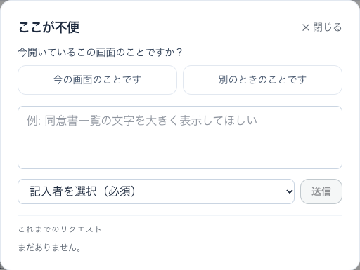
- 「今の画面のことです」を押すと、画面名・端末・日時が自動で付きます（どの画面の話か説明しなくて済みます）。
- 後から思い出して送るときは「別のときのことです」。直近1週間に開いた画面から選べます。分からなければ「わからない・一覧にない」でもそのまま送れます。
- 内容を書いて、記入者を選んで「送信」。送信後に「たいてい数日で直ります」と出れば受付完了です。
12-1. 更新履歴（このガイドに載せた大きな変更）
| 日付 | 変わったこと |
|---|---|
| 2026-11-27 | 署名済みの書類をLINE のマイページへ送るボタン（8-3）。 |
| 2026-11-18 | 名前が「院内書類」に。手術・麻酔は麻酔カルテ、歯科の記録は歯科カルテへ。画面を今日・患者・書類の3つのタブにし、「＋書類を作る」（患者→種類）・患者ページの書類一覧・書類タブの絞り込みを追加。更新履歴は設定へ。スマホはタブが画面の下に。 |
| 2026-11-05 | お花の送り状を画面から FAX で送れるように。 |
| 2026-10-19 | スタッフ用パスコードが必要に。 |
13. よくある質問・困ったとき
| 質問 | 答え |
|---|---|
| ログイン（パスコード）は要りますか？ | 要ります（2026-10-19 から）。入院管理アプリと同じスタッフ用パスコードです。一度入れるとその端末は30日間覚えます。「パスコードが違います」と出たら打ち直してください。分からなければ院長・永野さんへ。 |
| 前の「問診票」「同意書」「その他書類」のメニューが無い | 11/18 から上のメニューは「今日・患者・書類」になりました。前の一覧の画面は書類タブのいちばん下から今までどおり開けます。書類を作るのは「＋書類を作る」です。 |
| ホームの「すぐ作成する」が無い | 「＋書類を作る」で患者 → 種類の順に選ぶ形になりました（4章）。 |
| スマホでメニューが見えない | スマホでは今日・患者・書類のタブが画面の下にあります。設定・ここが不便は上の右側です。 |
| 手術予定・麻酔の記録が出てこない | 11/18 から手術・麻酔は麻酔カルテです（麻酔カルテのガイドの「よくある質問」）。右上の「麻酔カルテ↗」から開けます。 |
| 歯科初診の方が「今日」に出ない | 予約システムの「初診（歯科）」で予約が入っているかをご確認ください。問診票がまだでも予約があれば出ます。 |
| 未署名の同意書が「今日」に出ない | ②確かめるには予定日が今日以降の物（予定日の無い物は今日作った物）だけが出ます。古い物は書類タブ →「下書き・未署名」で探してください。 |
| 画面が古いまま／新しい機能が出ない | 更新は自動で入ります。まれに切り替わらない時は、画面を下に引いて再読み込みしてください。 |
| iPad でボタンを押しても何も起きない | パスコードを付ける前から開いたままだった画面です。画面を再読み込み（下に引く、または開き直す）するとパスコードの画面が出るので、入れ直してください。 |
| 患者情報が自動で入らない | アーミックス取込は受付PCが動いている日中のみです。動いていない時は手動入力／仮患者で進められます。 |
| iPadでPDFの「戻る」や印刷ができない | 院内の https://giiv6wcx.lamarck-lan.com:13007 をホーム画面に追加し直して、そこから開いてください（古いアイコン＝http のままだと印刷が出ません）。アプリ内ビューアで戻る・印刷ができます。 |
| 使いにくい・こうしてほしい | 画面右上の「💬 ここが不便」から送ってください（12章）。すぐ直せることが多いです。 |